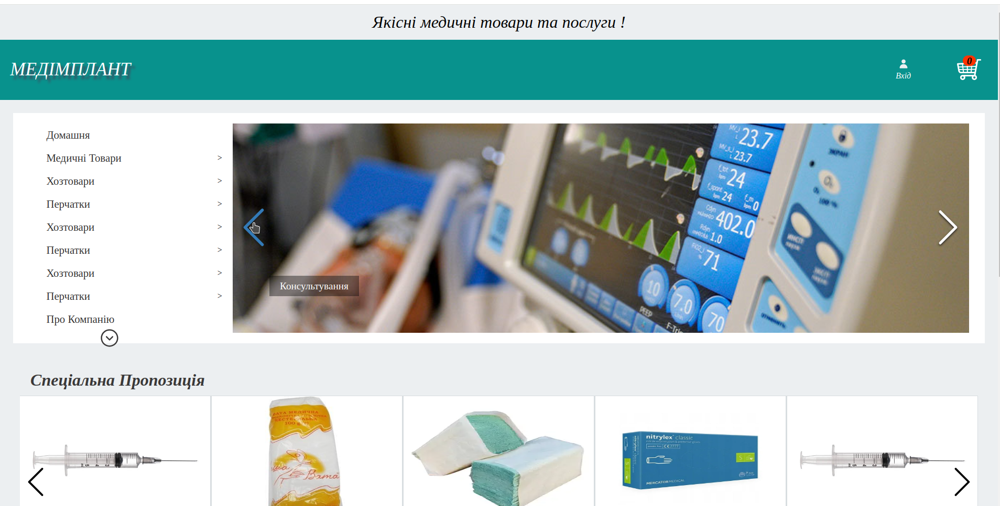

<section class="works">
  <div class="__container">
    <div class="base__top">
      <span class="_icon-mouse base__top_icon"></span>
      <span class="_icon-stroke-line base__top_icon"></span>
    </div>
    <div class="base__content">
      <h1 class="base__content_tittle">Works</h1>
      <p class="base__content_text">
        I had the pleasure of working with these awesome projects
      </p>
      <div class="swiper_container">
        <!-- Slider main container -->
        <div class="swiper">
          <!-- Additional required wrapper -->
          <div class="swiper-wrapper">
            <!-- Slides -->
            
            <a  href="http://684713-vds-teslabest87.gmhost.pp.ua/" class="swiper-slide -ibg">
              
            </a>
            <a href="https://vladimirmartinenko.github.io/test-project/" class="swiper-slide -ibg">
              
            </a>
            <a href="https://vladimirmartinenko.github.io/fitnes-shop/" class="swiper-slide -ibg">
              
            </a>
            ...
          </div>
          <!-- If we need pagination -->
          <!-- <div class="swiper-pagination"></div> -->

          <!-- If we need navigation buttons -->
          <div class="swiper-container-prev">
            <div class="swiper-button-prev"></div>
          </div>
          <div class="swiper-container-next"> 
          <div class="swiper-button-next"></div>
        </div>

          <!-- If we need scrollbar -->
          <!-- <div class="swiper-scrollbar"></div> -->
        </div>
      </div>
    </div>
  </div>
</section>
